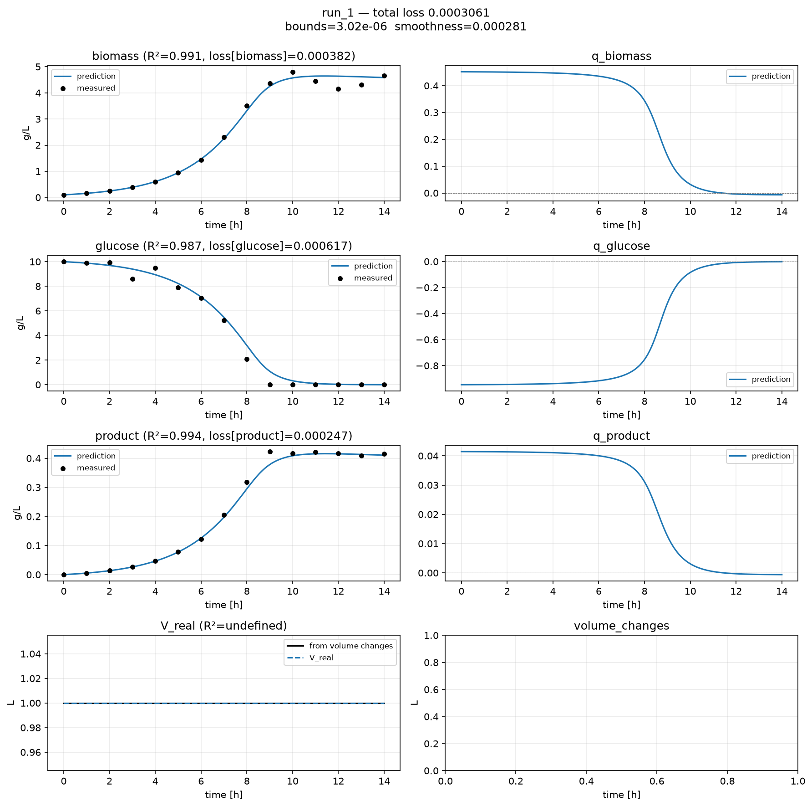

Custom losses¶
Demonstrates. A loss module that constrains the trajectory between measurements (bounds on states and rates, and a smoothness penalty on rate curvature) using hybrax.format’s own
Boundsmetadata andhybrax.train’s jump-aware dense-grid helpers.
By default, a loss only ever looks at measurement times. Between them, the model is free to do anything that reproduces the endpoints: including going negative, or oscillating wildly. The dense grid exists to close that gap: opt in, and the trainer also saves on a uniform time linspace, which the loss can then penalise.
This example adds three terms on top of Tutorial 4’s reaction module and scales, none of which change the fit: they change what the model is allowed to do while fitting.
The walkthrough below shows the file in pieces, next to the reasoning for each one. For the whole thing at once: to copy, diff against your own, or just read top to bottom:
Full custom.py
1"""A loss module that constrains the trajectory BETWEEN measurements.
2
3Builds on the reaction module and scale estimation from Tutorial 4: those two
4hooks are unchanged. This file adds three more things, all evaluated on a
5dense grid rather than only at the sparse measurement times:
6
71. A hinge penalty on every declared STATE bound (from
8 ``ReactorMediumComponent.bounds``, already present in the data).
92. A hinge penalty on every declared RATE bound (from
10 ``BiologicalOde.rates``, attached here via ``transform_process_collection``
11 since the auto-generated ODE leaves rates unbounded).
123. A smoothness penalty: the sum of squared second time-derivatives
13 ("curvature") of each rate trajectory, masked away from genuine
14 discontinuities (bolus/sample jumps) with hybrax.train's own helper.
15"""
16
17import equinox as eqx
18import jax
19import jax.numpy as jnp
20import numpy as np
21
22from hybrax.format.mechanistic import build_rhs_ode
23from hybrax.train import (
24 EstimatedScales,
25 LossInputs,
26 LossOutputs,
27 ReactionInputs,
28 ReactionOutputs,
29 UserReactionModule,
30 dense_triple_mask_away_from_jumps,
31 trainable_field,
32)
33from hybrax.train.dense import all_triple
34from hybrax.train.defaults import DefaultLossModule
35
36
37# --------------------------------------------------------------------------
38# 1 & 2. Reaction module and scale estimation: identical to Tutorial 4.
39# --------------------------------------------------------------------------
40class BatchReactionModule(UserReactionModule):
41 mlp: eqx.nn.MLP = trainable_field()
42
43 def __init__(self, *, key, **scale_kwargs):
44 super().__init__(**scale_kwargs)
45 self.mlp = eqx.nn.MLP(
46 in_size=self.n_modeled_RMCs,
47 out_size=self.n_modeled_BiologicalOde_rates,
48 width_size=32,
49 depth=3,
50 activation=jax.nn.tanh,
51 key=key,
52 )
53
54 def __call__(self, t, inputs: ReactionInputs) -> ReactionOutputs:
55 del t
56 return ReactionOutputs(
57 SCL_modeled_BiologicalOde_rates=self.mlp(inputs.SCL_modeled_RMCs),
58 SCL_modeled_Outflows_rates=jnp.zeros(0),
59 SCL_modeled_Inflows_rates=jnp.zeros(0),
60 )
61
62
63def build_reaction_module(*, seed, **kwargs):
64 scale_kwargs = {k: v for k, v in kwargs.items() if k.startswith("SCALE_")}
65 return BatchReactionModule(key=jax.random.key(seed), **scale_kwargs)
66
67
68def estimate_all_scales(runtime_data, target_names, config):
69 del target_names, config
70 rhs = runtime_data.rhs_ode
71 n_processes = len(runtime_data.process_order)
72
73 def max_abs_state(name):
74 best = 0.0
75 for i in range(n_processes):
76 _, values = runtime_data.raw_state_trace(i, name)
77 if values.size:
78 best = max(best, float(np.max(np.abs(values))))
79 return max(best, 1e-6)
80
81 rmc_scale = {name: max_abs_state(name) for name in rhs.name_modeled_RMCs}
82
83 def rate_scale_for(species):
84 per_process = []
85 for i in range(n_processes):
86 c_times, c_values = runtime_data.raw_state_trace(i, species)
87 x_times, x_values = runtime_data.raw_state_trace(i, "biomass")
88 exposure = np.trapezoid(x_values, x_times)
89 per_process.append(abs(c_values[-1] - c_values[0]) / max(exposure, 1e-9))
90 return max(max(per_process), 1e-9)
91
92 rate_scale = [rate_scale_for(name[2:]) for name in rhs.name_modeled_rates]
93
94 empty = jnp.zeros(0)
95 return EstimatedScales(
96 SCALE_modeled_RMCs=jnp.asarray([rmc_scale[n] for n in rhs.name_modeled_RMCs]),
97 SCALE_modeled_BiologicalOde_rates=jnp.asarray(rate_scale),
98 SCALE_V_in_cumulative=jnp.asarray(
99 max(runtime_data.initial_volume(i) for i in range(n_processes))
100 ),
101 SCALE_modeled_Inflows_cumulative=empty,
102 SCALE_modeled_Inflows_rates=empty,
103 SCALE_modeled_Outflows_cumulative=empty,
104 SCALE_modeled_Outflows_rates=empty,
105 SCALE_controlled_Inflows_cumulative=empty,
106 SCALE_controlled_Inflows_rates=empty,
107 SCALE_controlled_Outflows_cumulative=empty,
108 SCALE_controlled_Outflows_rates=empty,
109 SCALE_controlled_PVs=empty,
110 SCALE_controlled_Inflows_Cin=jnp.maximum(
111 jnp.abs(jnp.asarray(rhs.Cin_controlled_Inflows)), 1.0
112 ),
113 SCALE_modeled_Inflows_Cin=jnp.maximum(
114 jnp.abs(jnp.asarray(rhs.Cin_modeled_Inflows)), 1.0
115 ),
116 )
117
118
119# --------------------------------------------------------------------------
120# 3. Attach rate bounds. hybrax.format's auto-generated BiologicalOde leaves every
121# rate unbounded (Bounds = (None, None)); here we declare what we actually
122# know about the biology, so the loss below has something to read.
123# --------------------------------------------------------------------------
124def transform_process_collection(collection, config):
125 del config
126 for process in collection.processes.values():
127 # Uptake cannot be positive; formation cannot be wildly negative.
128 process.biological_ode.rates["q_biomass"] = (-0.05, 1.0)
129 process.biological_ode.rates["q_glucose"] = (-3.0, 0.0)
130 process.biological_ode.rates["q_product"] = (0.0, 0.3)
131 return collection
132
133
134# --------------------------------------------------------------------------
135# 4. The loss module.
136# --------------------------------------------------------------------------
137class PhysicalConstraintsLoss(DefaultLossModule):
138 """Per-target MSE (inherited) + a bounds hinge + a rate-smoothness term,
139 all evaluated on a 200-point dense grid rather than only at measurements.
140 """
141
142 state_lo: jax.Array = eqx.field(static=True)
143 state_hi: jax.Array = eqx.field(static=True)
144 rate_lo: jax.Array = eqx.field(static=True)
145 rate_hi: jax.Array = eqx.field(static=True)
146 bounds_weight: float = eqx.field(static=True, default=20.0)
147 smoothness_weight: float = eqx.field(static=True, default=1e-2)
148
149 def __init__(self, *, target_names, state_lo, state_hi, rate_lo, rate_hi):
150 super().__init__(target_names=target_names)
151 self.state_lo, self.state_hi = state_lo, state_hi
152 self.rate_lo, self.rate_hi = rate_lo, rate_hi
153
154 @property
155 def loss_names(self):
156 return (*self.target_names, "bounds", "smoothness")
157
158 @property
159 def dense_grid_n(self):
160 return 200 # opt in: populates every dense_* field on LossInputs
161
162 def __call__(self, inputs: LossInputs) -> LossOutputs:
163 residual = inputs.SCL_target_pred - jnp.where(
164 inputs.mask_measured, inputs.SCL_target_measured, 0.0
165 )
166 per_target = self.residual_reduction(residual, inputs.mask_measured)
167
168 valid = inputs.dense_valid_time # post-solver-failure mask
169
170 def hinge(value, lo, hi):
171 # -inf / +inf bounds fall out of the clip naturally: no branching.
172 return (
173 jnp.clip(lo - value, min=0.0) ** 2 + jnp.clip(value - hi, min=0.0) ** 2
174 )
175
176 # State bounds: dense_RAW_states is [modeled RMCs | modeled PVs | V];
177 # slice to just the RMC axes our bounds were built for.
178 n_state_bounds = self.state_lo.shape[0]
179 state_penalty = hinge(
180 inputs.dense_RAW_states[:, :n_state_bounds], self.state_lo, self.state_hi
181 )
182 rate_penalty = hinge(
183 inputs.dense_RAW_modeled_BiologicalOde_rates, self.rate_lo, self.rate_hi
184 )
185 bounds = (
186 jnp.sum(state_penalty * valid[:, None])
187 + jnp.sum(rate_penalty * valid[:, None])
188 ) / jnp.maximum(jnp.sum(valid), 1.0)
189
190 # Smoothness: central second difference of each rate trajectory.
191 # dense_t is a uniform linspace, so a fixed dt is valid.
192 dt = inputs.dense_t[1] - inputs.dense_t[0]
193 rates = inputs.dense_RAW_modeled_BiologicalOde_rates
194 curvature = (rates[2:] - 2.0 * rates[1:-1] + rates[:-2]) / (dt**2)
195 # A bolus/sample creates a REAL kink; do not penalise curvature there.
196 # hybrax.train ships this exact helper for that purpose.
197 triple_mask = all_triple(valid) & dense_triple_mask_away_from_jumps(
198 inputs.dense_t, inputs.jump_ts, jump_epsilon_h=2.0 * dt
199 )
200 smoothness = jnp.sum(
201 jnp.square(curvature) * triple_mask[:, None]
202 ) / jnp.maximum(jnp.sum(triple_mask), 1.0)
203
204 return LossOutputs(
205 named_losses={
206 **{name: per_target[i] for i, name in enumerate(self.target_names)},
207 "bounds": self.bounds_weight * bounds,
208 "smoothness": self.smoothness_weight * smoothness,
209 }
210 )
211
212
213def build_loss_module(*, target_names, training_parent_collection, **kwargs):
214 # Bounds are read from the FIRST process. hybrax.format's cross-process
215 # consistency check guarantees every process shares the same structure.
216 process = next(iter(training_parent_collection.processes.values()))
217 rhs = build_rhs_ode(process)
218
219 def as_pair(bounds):
220 lo, hi = bounds
221 return (-jnp.inf if lo is None else lo), (jnp.inf if hi is None else hi)
222
223 state_bounds = [
224 as_pair(process.reactor_medium.components[n].bounds)
225 for n in rhs.name_modeled_RMCs
226 ]
227 rate_bounds = [
228 as_pair(process.biological_ode.rates[n]) for n in rhs.name_modeled_rates
229 ]
230
231 return PhysicalConstraintsLoss(
232 target_names=list(target_names),
233 state_lo=jnp.array([b[0] for b in state_bounds]),
234 state_hi=jnp.array([b[1] for b in state_bounds]),
235 rate_lo=jnp.array([b[0] for b in rate_bounds]),
236 rate_hi=jnp.array([b[1] for b in rate_bounds]),
237 )
1. Bounds, from the data itself¶
ReactorMediumComponent.bounds is metadata hybrax.format already carries: demo_batch
declares (0.0, None) on every species, because a concentration cannot be negative. But
BiologicalOde.rates bounds default to unbounded, since auto-generation has no way to
know what a plausible rate range is. Attaching them is one transform_process_collection
hook:
1
2# --------------------------------------------------------------------------
3# 3. Attach rate bounds. hybrax.format's auto-generated BiologicalOde leaves every
4# rate unbounded (Bounds = (None, None)); here we declare what we actually
5# know about the biology, so the loss below has something to read.
6# --------------------------------------------------------------------------
7def transform_process_collection(collection, config):
8 del config
This is exactly the use hybrax.format’s docs describe for Bounds: “pure metadata (not
enforced inside RhsOde or the integrator; downstream consumers read them off the process
to build soft-constraint penalties.” Nothing threads these bounds into hybrax.train
automatically) the loss module below reads them itself, once, at construction:
1 inputs.dense_t, inputs.jump_ts, jump_epsilon_h=2.0 * dt
2 )
3 smoothness = jnp.sum(
4 jnp.square(curvature) * triple_mask[:, None]
5 ) / jnp.maximum(jnp.sum(triple_mask), 1.0)
6
7 return LossOutputs(
8 named_losses={
9 **{name: per_target[i] for i, name in enumerate(self.target_names)},
10 "bounds": self.bounds_weight * bounds,
11 "smoothness": self.smoothness_weight * smoothness,
12 }
13 )
14
15
16def build_loss_module(*, target_names, training_parent_collection, **kwargs):
17 # Bounds are read from the FIRST process. hybrax.format's cross-process
18 # consistency check guarantees every process shares the same structure.
19 process = next(iter(training_parent_collection.processes.values()))
20 rhs = build_rhs_ode(process)
21
22 def as_pair(bounds):
2. The hinge penalty, on the dense grid¶
1 residual = inputs.SCL_target_pred - jnp.where(
2 inputs.mask_measured, inputs.SCL_target_measured, 0.0
3 )
4 per_target = self.residual_reduction(residual, inputs.mask_measured)
5
6 valid = inputs.dense_valid_time # post-solver-failure mask
7
8 def hinge(value, lo, hi):
9 # -inf / +inf bounds fall out of the clip naturally: no branching.
10 return (
11 jnp.clip(lo - value, min=0.0) ** 2 + jnp.clip(value - hi, min=0.0) ** 2
12 )
13
14 # State bounds: dense_RAW_states is [modeled RMCs | modeled PVs | V];
15 # slice to just the RMC axes our bounds were built for.
-inf/+inf for an unbounded side falls straight out of the clip, so there is no
branching on which bounds are set. The penalty is evaluated on dense_RAW_states and
dense_RAW_modeled_BiologicalOde_rates (RAW, because “negative” and “above 1.0 1/h”
only mean something in physical units) and masked by dense_valid_time, the dense
grid’s own post-solver-failure mask.
3. Smoothness, without penalising real jumps¶
1 state_penalty = hinge(
2 inputs.dense_RAW_states[:, :n_state_bounds], self.state_lo, self.state_hi
3 )
4 rate_penalty = hinge(
5 inputs.dense_RAW_modeled_BiologicalOde_rates, self.rate_lo, self.rate_hi
6 )
7 bounds = (
8 jnp.sum(state_penalty * valid[:, None])
9 + jnp.sum(rate_penalty * valid[:, None])
10 ) / jnp.maximum(jnp.sum(valid), 1.0)
11
The curvature is a plain central second difference; dense_t is a uniform linspace, so a
single dt is valid across the whole grid. The only non-obvious part is the mask:
triple_mask = all_triple(valid) & dense_triple_mask_away_from_jumps(
inputs.dense_t, inputs.jump_ts, jump_epsilon_h=2.0 * dt)
A bolus creates a real, physical kink in concentration (and therefore in the inferred
rate. Penalising curvature there would fight the data. dense_triple_mask_away_from_jumps
is shipped by hybrax.train for exactly this: it excludes any three-point window whose span
straddles a jump time, so smoothness is only asked for where the process is actually
smooth. demo_batch has no events, so this mask is a no-op here) see
Fed-batch for where it matters.
Training¶
2026-08-26 20:06:16 INFO __main__: training complete: first_mean_loss=0.136489 last_mean_loss=0.00040269 delta=-0.136086
run directory: ./source/_data/out/runs/gallery_dense_loss/run_full
Did it cost anything?¶
target R2
biomass 0.9934
glucose 0.9919
product 0.9958
min predicted glucose : -0.0030 g/L (bound: >= 0)
curvature(q_biomass) : 0.3189
curvature(q_glucose) : 0.6823
Compare against Tutorial 4’s plain fit on the same data, same epochs, same learning rate: everything below used the unconstrained loss:
comparison run directory: ./source/_data/out/runs/gallery_dense_loss/run_base
target no penalty with penalty
biomass 0.9966 0.9934
glucose 0.9973 0.9919
product 0.9990 0.9958
min glucose -0.1396 -0.0030
curv(q_X) 0.5044 0.3189
curv(q_S) 1.2817 0.6823
Fit quality is essentially unchanged: every R² moves by less than a percentage point. What changed is what happens between measurements: the worst glucose excursion goes from clearly negative to essentially zero, and both rate trajectories are visibly less wiggly. This is the actual case for dense-grid penalties: they are close to free when the constraint is compatible with the data, and they catch exactly the failure mode that measurement-only losses cannot see.

See also¶
Run the example yourself at ./source/_data/out/runs/gallery_dense_loss/.
The Loss Module:
dense_grid_nand everydense_*field.Tutorial 4: the reaction module and scales this builds on.
Fed-batch: a process with real jumps, where the away-from-jumps masking actually does something.